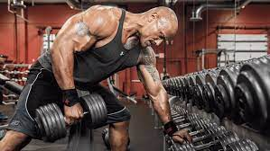

THE ROCK GYM | THE PHILOSOPHY PAGE
20 MORTIVATIONAL QUOTES TO INSIPRE GREATNESS IN GYM.
lacking mortivation to get back into the gym? Back in the gym already but feel stagnated? Or maybe you're just looking for insipration for a new year. Whatever your situation, reading words of wisdom from succesful peaple can be super-inspiring.
With that in mind, hrer are 20 amazing motivational quotes from notable figures to help you kick start your new year - and your fitness goals. Some are from sports peaple, some enterpreneurs, world leaders and fomous thimkers, but in each of these quotes is something to inspire you in your fitness pursiuts. For more information visit this link.
1. "The last three or four reps is what makes the musle grow. This area of pain divides a champion from someone who is not a champion."
-Arnold Schwarzenegger, seven-time Mr.Olympia.
2. "Sucess usually comes to those who are too busy to be looking for it."
-Henry David Thoreau, poet and philospher.
3. "All progress takes place out of comport zone."
-Michael John Bobak, Digital Artist

4. "If you think lifting is dangerous, try being weak. Being weak is dangerous"
-bret Contreras, Sports Scientist
5. "The only place where success comes before work is in the dictionary."
-Vidal Sassoon, Hairstylist and businessman
6. "The clock is ticking. Are yiu becoming the person you want to be?"
-Greg Plitt, Fitness Model
7. ‘Whether you think you can, or you think you can’t, you’re right.
’
— Henry Ford, industrialist
8. ‘The successful warrior is the average man, with laser-like focus.’
— Bruce Lee, actor and martial artist
9. ‘You must expect great things of yourself before you can do them.’
— Michael Jordan, basketball player
10. ‘Action is the foundational key to all success.’ — Pablo Picasso, visual artist
11. ‘Things may come to those who wait, but only the things left by those who hustle.’
– Abraham Lincoln, 16th President of the United States
12. ‘Well done is better than well said.’
— Benjamin Franklin, American Founding Father and inventor
13. ‘All our dreams can come true if we have the courage to pursue them.’
— Walt Disney, film producer and entrepreneur
14. ‘A champion is someone who gets up when they can’t.’
— Jack Dempsey, professional boxer
15. ‘What hurts today makes you stronger tomorrow.’
— Jay Cutler, pro bodybuilder and four-time Mr. Olympia
16. ‘If something stands between you and your success, move it. Never be denied.’
— Dwayne ‘The Rock’ Johnson, actor and pro wrestler

17. ‘If you want something you’ve never had, you must be willing to do something you’ve never done.’
— Thomas Jefferson, Third President of the United States
18. ‘You have to think it before you can do it. The mind is what makes it all possible.’
— Kai Greene, pro bodybuilder and artist
19. ‘Things work out best for those who make the best of how things work out.’
— John Wooden, basketball player and coach
20. ‘Success is walking from failure to failure with no loss of enthusiasm.’
— Winston Churchill, British statesman and Prime Minister of the United Kingdom